In Lecture 8 the tree prior was an empty slot in the model. This lecture fills it.
Data: a small genetic sample from a large background population.
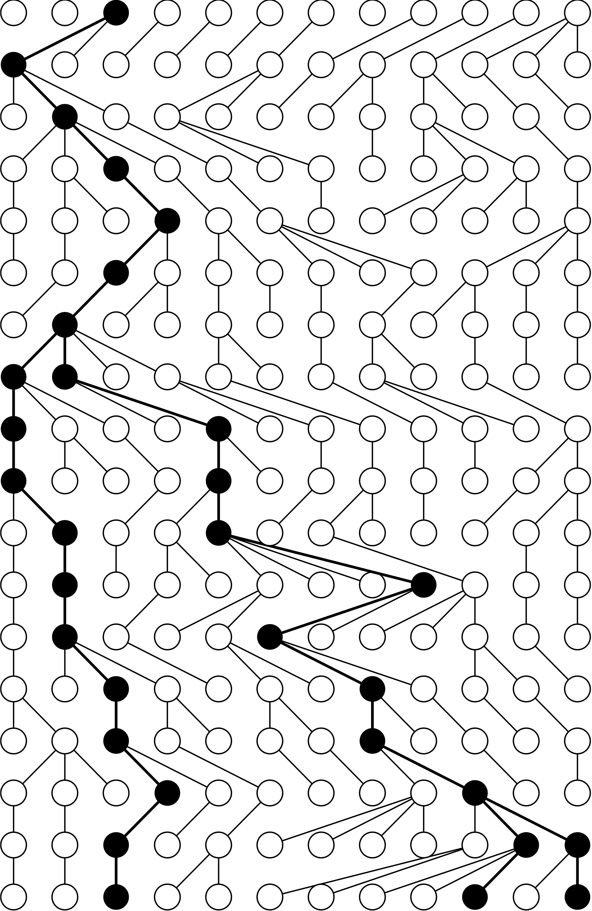
Almost all of theoretical population genetics starts from one deliberately simple picture of a population:
That last rule is the whole model. Everything else follows from it.
We will treat the population as haploid, which is the natural case for many pathogens and for mitochondrial DNA.
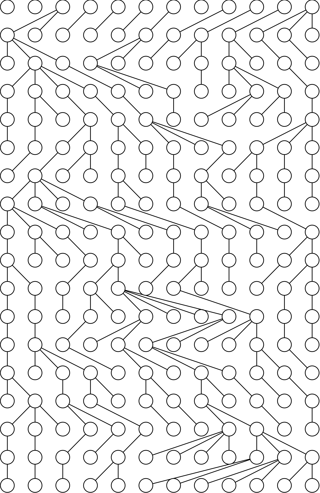
Two lineages have the same parent in the previous generation with probability $1/N$. So a pair of lineages coalesces at rate $1/N$ per generation, and a sample of $k$ lineages, which contains $k(k-1)/2$ pairs, coalesces that much faster.
Strip away everyone who left no descendants in the sample, and what remains is a tree:
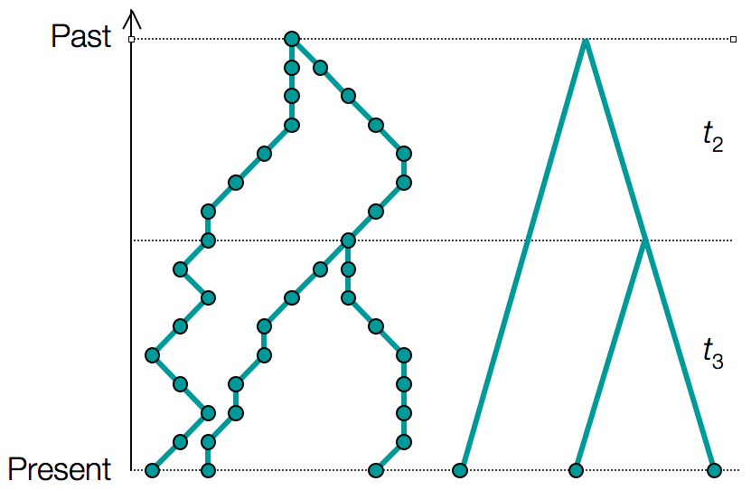
The coalescent gives the probability of any such tree, given the population history. In a Bayesian analysis that is precisely $P(T \mid \theta)$: the tree prior.
If population size controls the waiting times, then a population whose size changed leaves trees of a characteristic shape:
Pybus and Strimmer (2001) turned this into a standard picture: take an estimated tree, walk down it, and convert each waiting time into an estimate of population size at that depth.
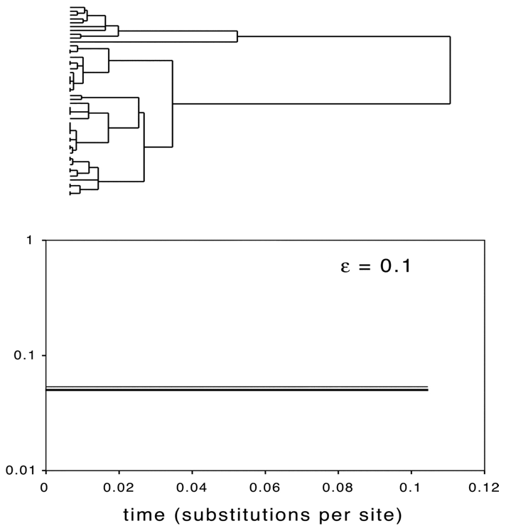
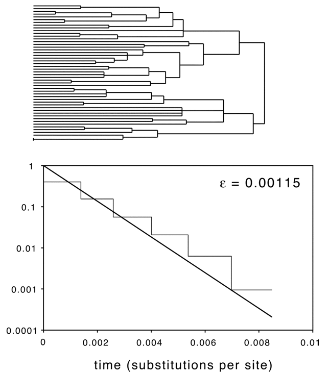
Adjacent intervals are grouped together to control the noise, which is the same thing the simulation above does with its time windows.
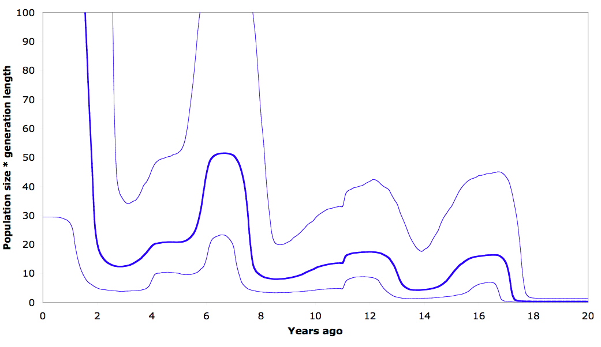
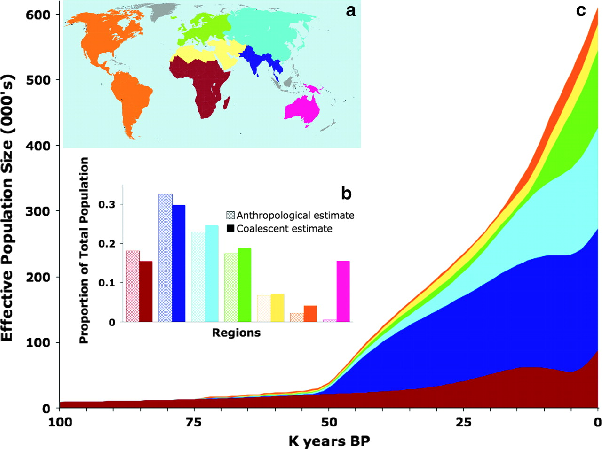
Mitochondrial sequences alone recover the expansion of human populations out of Africa, with the timing and the relative sizes of regional populations falling out of the tree shapes.
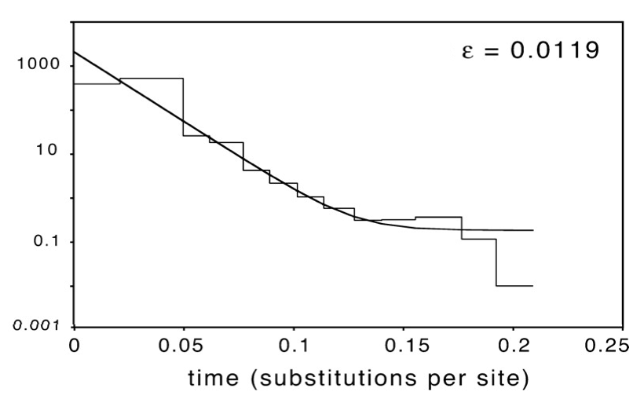
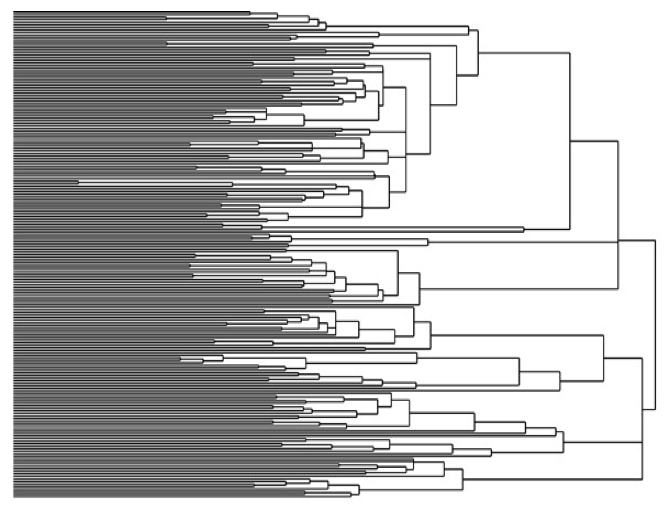
HIV-1 group M. The star-like tree on the right is the signature of a population that grew explosively, and the skyline plot on the left dates the start of that growth to the early twentieth century, decades before the disease was recognised.
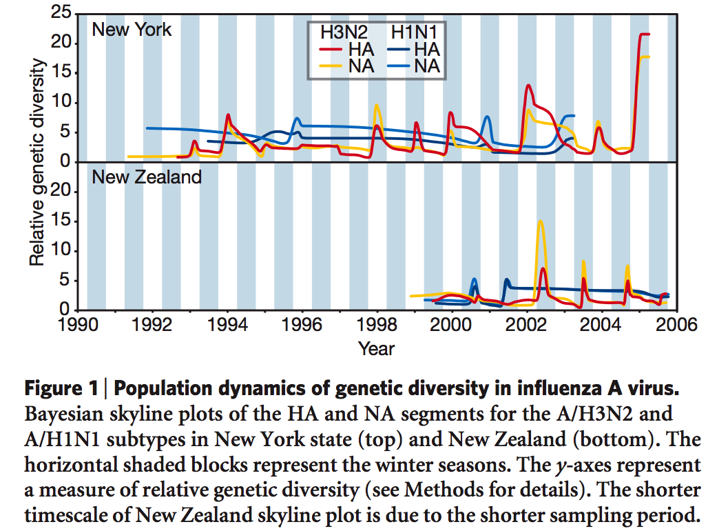
Genetic diversity in influenza A rises and falls every year. Each winter epidemic is a bottleneck, and the virus that seeds the next season descends from a small fraction of the previous one.
Dengue 4 in Puerto Rico. The blue band is estimated from virus genomes alone; the bars are reported cases:
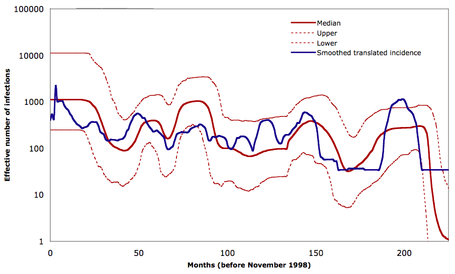
Genomes and surveillance data are independent sources, and they agree. That is the strongest kind of check available for a method whose answer concerns the unobserved past.
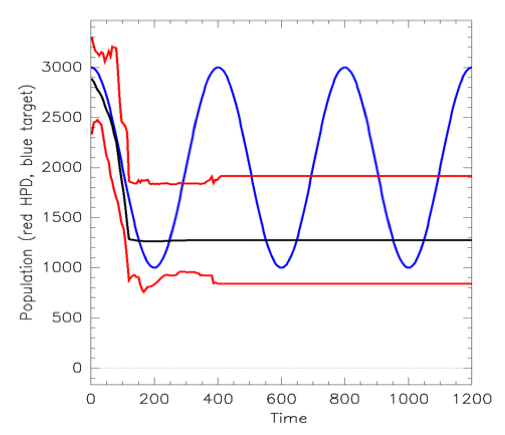
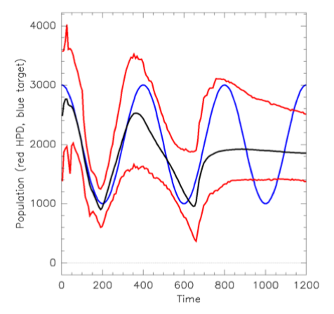
A single locus gives you one tree, and one tree is one realisation of a random process. Many independent loci give many trees, and only then does a bottleneck become clearly detectable.
Also useful: